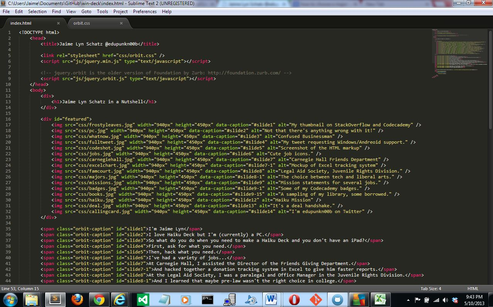
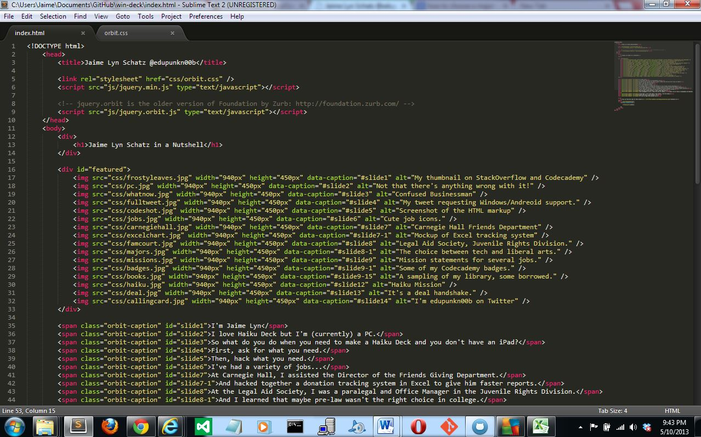

Jaime Lyn Schatz in a Nutshell
I'm Jaime Lyn
I love Haiku Deck but I'm (currently) a PC.
So what do you do when you need to make a Haiku Deck and you don't have an iPad?
First, ask for what you need.
Then, hack what you need.
I've had a variety of jobs...
At Carnegie Hall, I assisted the Director of the Friends Giving Department.
And hacked together a donation tracking system in Excel to give him faster reports.
At the Legal Aid Society, I was a paralegal and Office Manager in the Juvenile Rights Division.
And I learned that maybe pre-law wasn't the right choice in college.
Each job had a great mission.
And I made them mine.
But throughout it all, I felt the lure of coding...
I spend a lot of time on Codecademy and Udacity
And when I can't find what I need online, I hit the books.
Haiku Deck has a great mission, too.
I'd love to make that mission ours.
You can find the code for this project on Github


 
